Estimación de la pose de un vehículo respecto a su estacionamiento en simulación
Protocolo de tesis
May, 2025
Introducción
Estacionamiento
- Importancia
- Problemas
- Soluciones
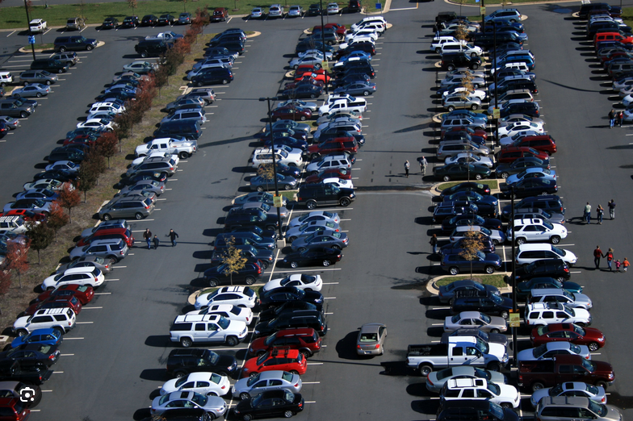
Sistemas de asistencia al conductor
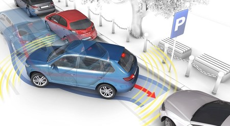 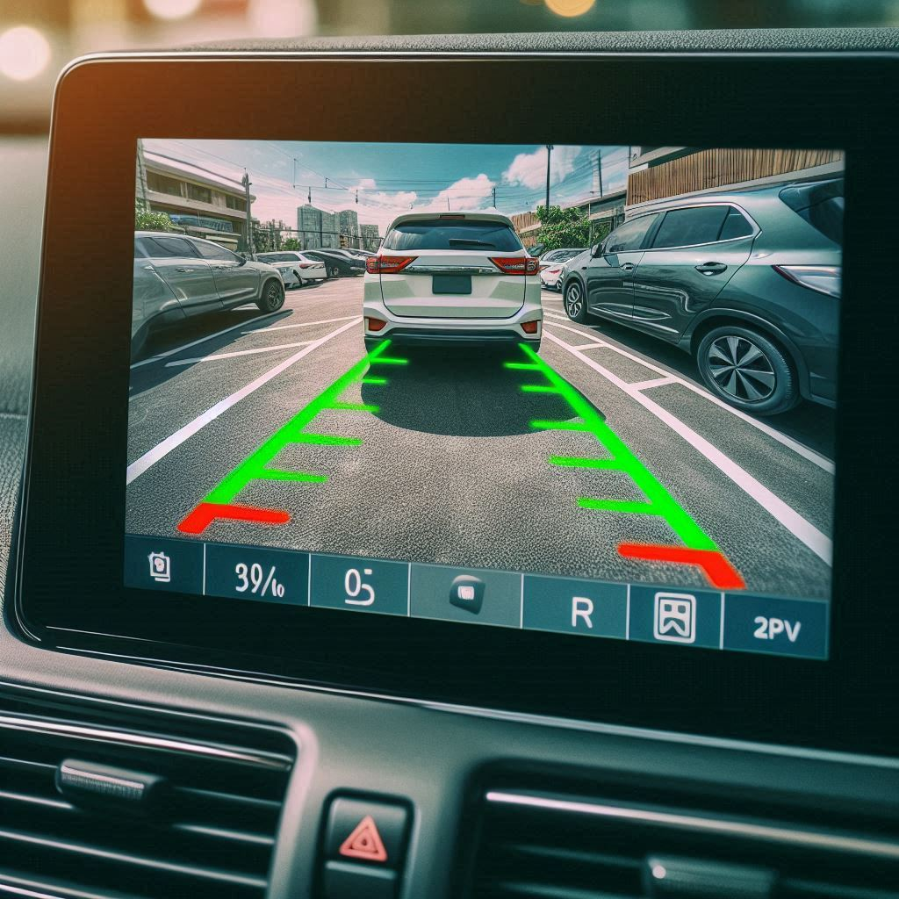 
Aprendizaje por Refuerzo
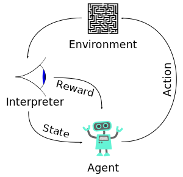
- Agente 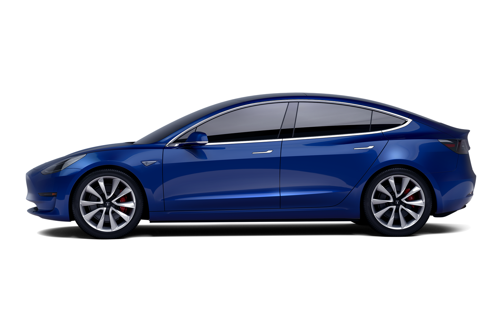
- Acciones

- Entorno 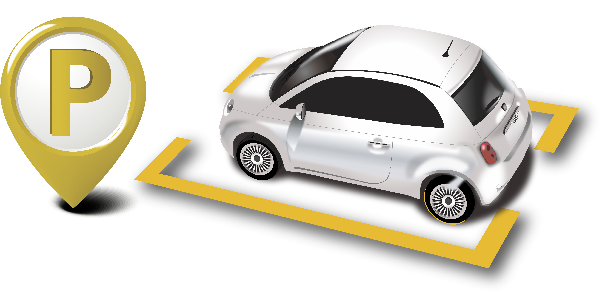
- Interprete 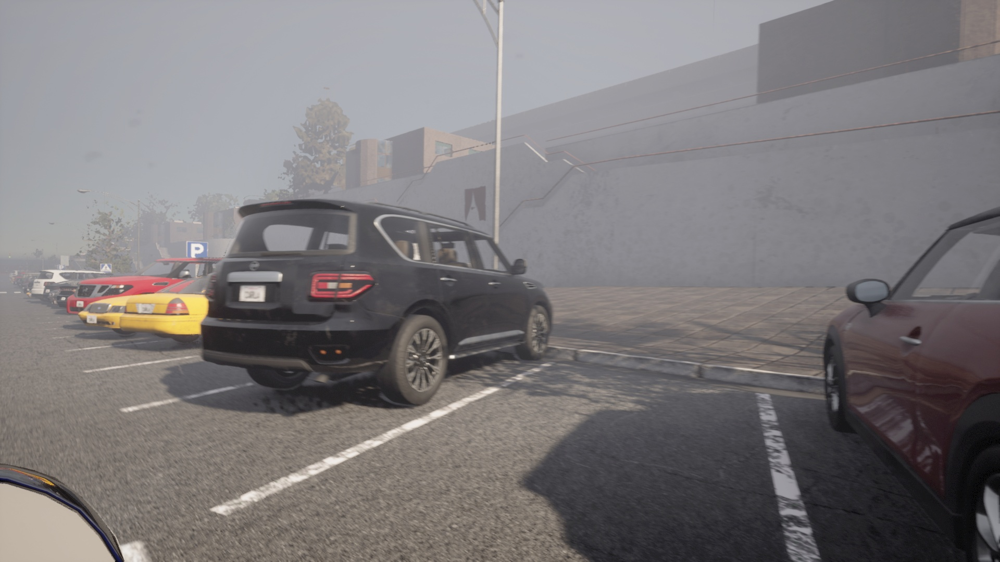
- Estado

- Recompensa 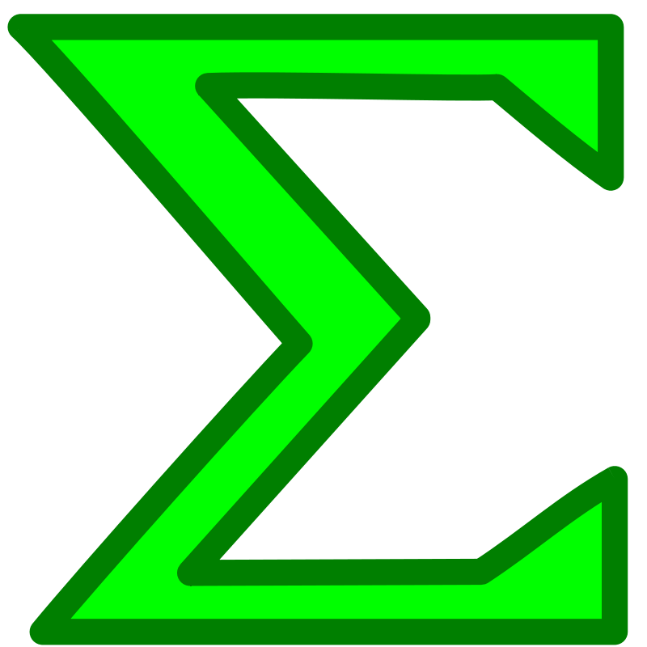


Visión Computacional
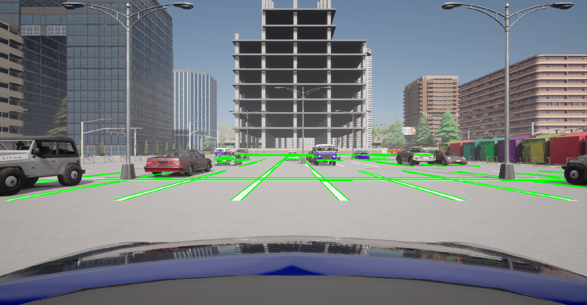 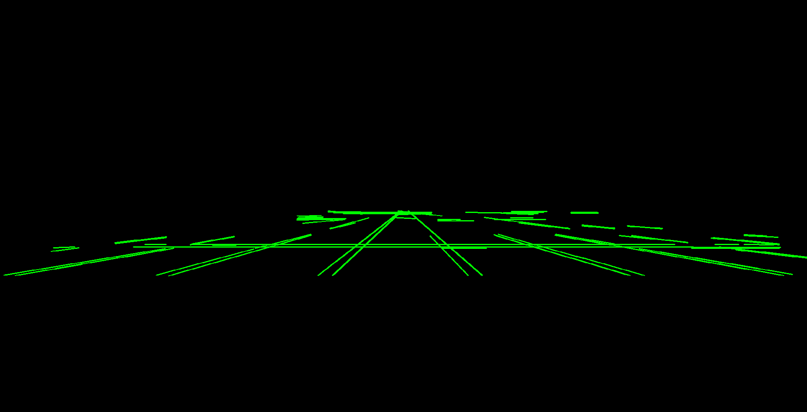 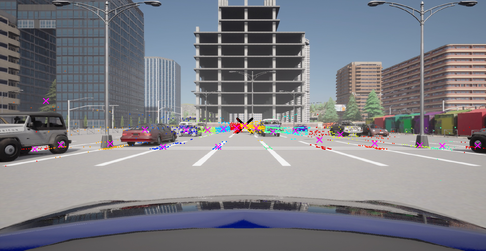  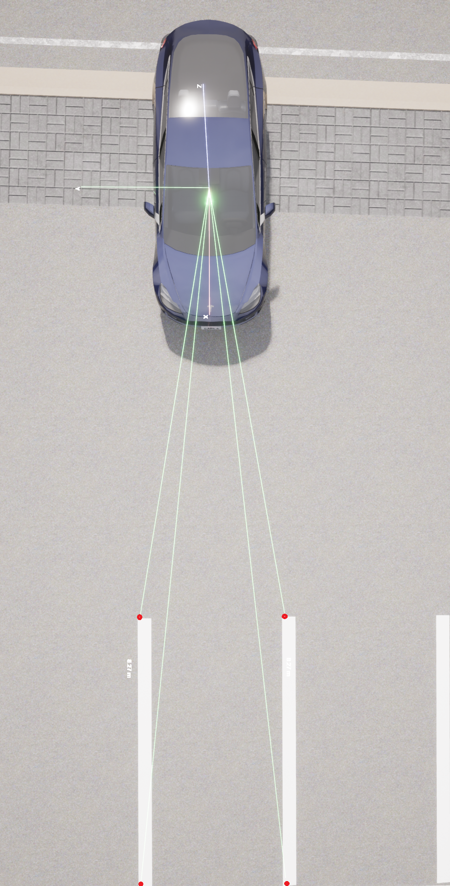
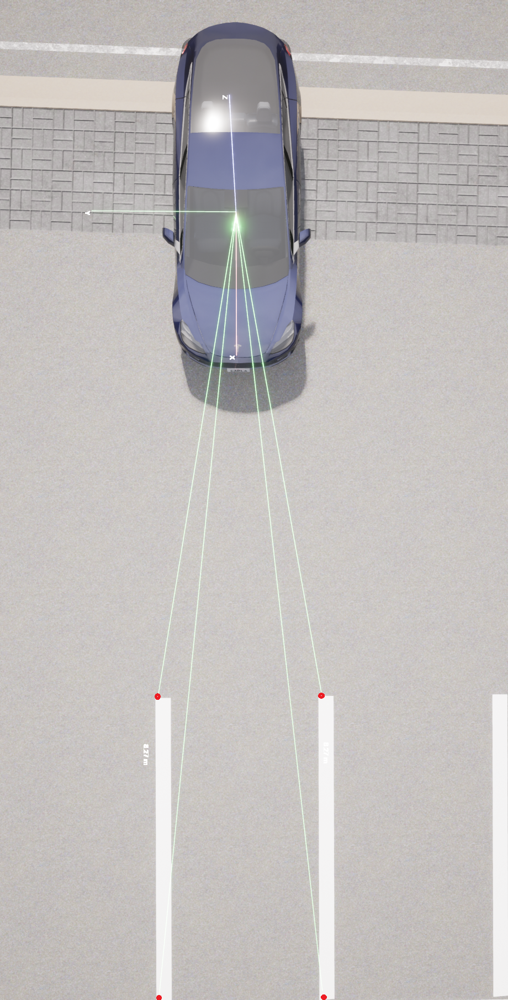
Marco Teórico
Hipótesis
“Estimando la posición relativa al estacionamiento de un vehículo mediante cámaras y sensores, y utilizando esta posición, se puede lograr un sistema de estacionamiento automático en simulación.”
Objetivo general
Desarrollar un sistema de estimación de la posición relativa al estacionamiento de un vehículo mediante cámaras y sensores para estacionamiento automático
Preguntas de investigación
- ¿Cómo se puede representar la posición de un vehículo con respecto a su espacio de estacionamiento?
- ¿Cómo se puede estimar esta posición utilizando las cámaras y sensores del vehículo?
- ¿Cómo usar esta posición estimada para que el vehículo se estacione automáticamente?
Metodología
Entorno de simulación
Carla
Código abierto (Dosovitskiy et al. 2017)
Entornos urbanos
Ciudades, carreteras, estacionamientos
Vehículos, peatones, semáforos, sensores
Api Python


Diseño del entorno de simulación
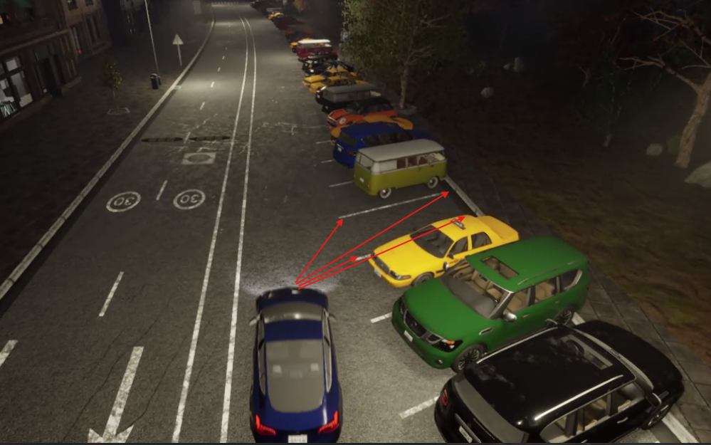 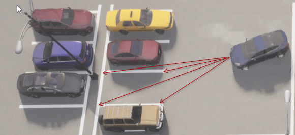 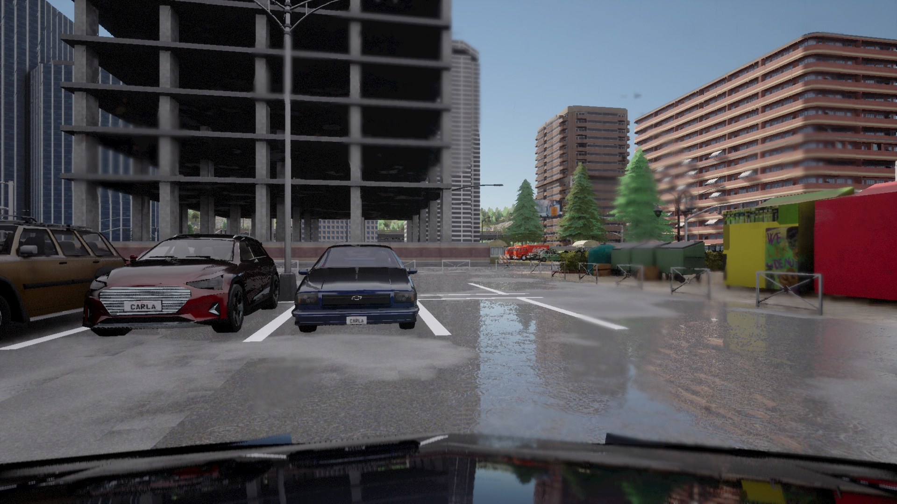 
Detección del estacionamiento
Propiedades
- Los estacionamientos suelen formar estructuras regulares, organizada como una retícula de paralelogramos.
- Los paralelogramos al proyectarse en la cámara pueden intersectarse en los “puntos de fuga”.
Proyección de la imagen en el plano de la cámara


Geometría del estacionamiento
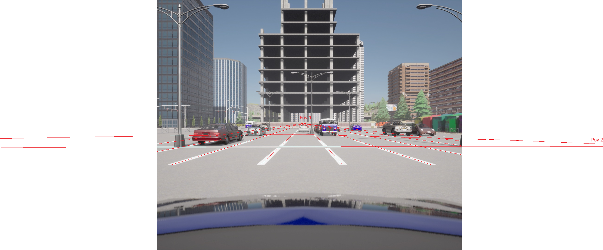Geometría del estacionamiento

Geometría del estacionamiento
Detección de líneas paralelas
- Umbralización
- Detección de contornos (Algoritmo de Canny)
- Lineas paralelas (Transformada de Hough)
Ecuaciones de las rectas de las líneas
\(a x + b y + c = 0\) \[ \begin{aligned} \left[\begin{array}{ccc} x_1 & y_1 & 1 \\ x_2 & y_2 & 1 \end{array}\right] \begin{bmatrix} a \\ b \\ c \end{bmatrix} = \begin{bmatrix} 0 \\ 0 \end{bmatrix} \end{aligned} \]
- Calculamos el espacio nulo (a,b,c) de cada recta
- SVD (Descomposición en valores singulares)
Ubicación de puntos de fuga
- Intersección de las rectas
- \(P= l_1 \times l_2\)
- Detección de cúmulos de puntos
Intersección de n líneas
La intersección de n líneas homogéneas esta dado por el eigen vector asociado al eigen valor más pequeño de la matriz \(M\) donde: \[ M = \sum_{i=1}^{n} w_i l_i l_i^T \] donde \(w_i\) es un peso asociado a la linea \(l_i\) .
Kanatani, K. (1998). Statistical optimization for geometric computation: theory and practice. Elsevier.
Lineas que concurren en los puntos de fuga
Ajuste de la retícula
Representación de la posición relativa al estacionamiento
Posición relativa
Avances y Planificación
| Actividad | Ene | Feb | Mar | Abr | May | Jun | Jul | Ago | Sep | Oct | Nov | Dic | Ene | Feb | Mar | Abr | May | Jun |
|---|---|---|---|---|---|---|---|---|---|---|---|---|---|---|---|---|---|---|
| Investigación y revisión bibliográfica | ✅ | ✅ | ✅ | ✅ | ✅ | ✅ | ✅ | ✅ | ✅ | ✅ | ✅ | |||||||
| Diseño y Configuración del Entorno Simulado | ✅ | ✅ | ✅ | ✅ | ✅ | |||||||||||||
| Adquisición y pre-procesamiento de Datos | ✅ | ✅ | ✅ | ✅ | ||||||||||||||
| Interpretar los datos de los sensores | ✅ | ✅ | ✅ | |||||||||||||||
| Obtención de mediciones en la imagen | ✅ | ✅ | ||||||||||||||||
| Detección de lineas y puntos de fuga | ✅ | ✅ | ✅ | |||||||||||||||
| Estimación de la posición de la retícula | ✅ | ⏳ | ⏳ | |||||||||||||||
| Mejorar la retícula usando filtro de kalman | ⏳ | ⏳ | ||||||||||||||||
| Estimación de distancias | ⏳ | ⏳ | ||||||||||||||||
| Estimación de la posición relativa | ⏳ | ⏳ | ||||||||||||||||
| Utilizar la posición en algoritmos de RL | ⏳ | ⏳ | ⏳ | |||||||||||||||
| Documentación y Análisis de Resultados | ✅ | ✅ | ✅ | ✅ | ✅ | ✅ | ✅ | ✅ | ✅ | ✅ | ✅ | ⏳ | ⏳ | ⏳ | ⏳ | ⏳ | ⏳ | ⏳ |
| Redacción y Revisión del documento de tesis | ⏳ | ⏳ | ⏳ | ⏳ | ⏳ | ⏳ | ⏳ |
Fin
Gracias por su atención…
Extras
Propiedades de la representación homogénea de lineas y puntos
si \(l_1\) y \(l_2\) son la representación homogénea de dos lineas en el plano el punto donde se intersectan esta dado por: \[ P = l_1 \times l_2 \]
si \(p_1\) y \(p_2\) son la representación homogénea de dos puntos en el plano la linea que pasa por estos puntos esta dado por: \[ l = p_1 \times p_2 \]
Hartley, R., & Zisserman, A. (2003). Multiple view geometry in computer vision. Cambridge university press.
Objetivos específicos:
- Modelar un ambiente de simulación de un vehículo y estacionamiento.
- Obtener datos de los sensores del vehículo en simulación.
- Interpretar los datos de los sensores mediante técnicas de visión computacional.
- Procesar los datos y estimar la posición del vehículo con respecto al estacionamiento.
- Utilizar la posición estimada para lograr un sistema de parqueo automático en simulación.
Trabajos relacionados
| Características / Trabajos relacionados | Propia | Autonomous Driving Architectures (Bachute and Subhedar 2021) | Vision-based Autonomous Car Racing (Cai et al. 2021) | Model-based Probabilistic Collision Detection (Althoff, Stursberg, and Buss 2009) | Cost-effective Vehicle Detection System (Alam, Jaffery, and Sharma 2022) |
|---|---|---|---|---|---|
| Utilización de cámaras RGB y sensores | X | X | X | X | X |
| Algoritmos de Aprendizaje Automático | X | X | X | X | X |
| Modelar la pose del vehiculo en el estacionamiento | X | ||||
| Maniobras de estacionamiento | X | ||||
| Análisis de tareas en la conducción autónoma | X | X | |||
| Detección de vehículos en conducción autónoma | X | X | |||
| Predicción estocástica de ocupación de la carretera | X | ||||
| Aprendizaje por refuerzo imitativo | X |
Referencias

Facultad de Matemáticas
Universidad Autónoma de Yucatán